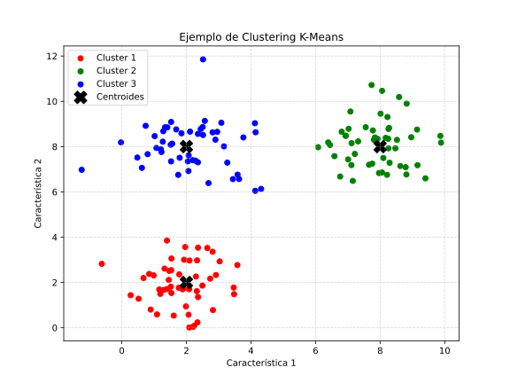

🎯 Unidad 2. Algoritmo K-Means
El algoritmo K-Means es el método de clustering más popular y ampliamente utilizado en Machine Learning. Su simplicidad, eficiencia y escalabilidad lo convierten en la primera opción para muchas tareas de agrupamiento. K-Means particiona los datos en k grupos (clusters) donde cada observación pertenece al cluster con el centroide (media) más cercano.

2.1. ¿Cómo Funciona K-Means?
Intuición del Algoritmo
K-Means busca dividir \(n\) observaciones en \(k\) clusters de manera que se minimice la varianza dentro de cada cluster. Es un algoritmo iterativo que alterna entre dos pasos hasta converger:
- Asignación: Cada punto se asigna al centroide más cercano
- Actualización: Cada centroide se recalcula como la media de los puntos asignados
Algoritmo Paso a Paso
┌─────────────────────────────────────────────────────────────┐
│ ALGORITMO K-MEANS │
├─────────────────────────────────────────────────────────────┤
│ Entrada: Datos X, número de clusters k │
│ Salida: Asignaciones de cluster y centroides │
│ │
│ 1. INICIALIZACIÓN │
│ Seleccionar k puntos aleatorios como centroides iniciales│
│ │
│ 2. REPETIR hasta convergencia: │
│ a) ASIGNACIÓN: Asignar cada punto al centroide más │
│ cercano (según distancia Euclidiana) │
│ b) ACTUALIZACIÓN: Recalcular cada centroide como la │
│ media de todos los puntos asignados a él │
│ │
│ 3. CONVERGENCIA cuando: │
│ - Los centroides no cambian, O │
│ - Las asignaciones no cambian, O │
│ - Se alcanza el número máximo de iteraciones │
└─────────────────────────────────────────────────────────────┘
Visualización del Proceso
Iteración 0 (Inicial) Iteración 1 Iteración 2 (Final)
× • • × • • × • •
• • • • • • • • •
× • ו ו
• • • • • • • • •
• × • × • ×
× = Centroide × se mueve × converge
• = Punto de datos
2.2. Explicación Matemática
Función Objetivo
K-Means busca minimizar la inercia (Within-Cluster Sum of Squares - WCSS):
Donde:
- \(k\) = número de clusters
- \(C_i\) = conjunto de puntos en el cluster \(i\)
- \(\mu_i\) = centroide del cluster \(i\)
- \(||x - \mu_i||^2\) = distancia Euclidiana al cuadrado
Paso de Asignación
Para cada punto \(x_j\), se asigna al cluster cuyo centroide está más cerca:
Donde \(c_j\) es la asignación de cluster para el punto \(x_j\).
Paso de Actualización
Cada centroide se actualiza como la media aritmética de todos los puntos asignados:
Donde \(|C_i|\) es el número de puntos en el cluster \(i\).
Distancia Euclidiana
La métrica estándar utilizada:
Donde \(p\) es el número de dimensiones (features).
2.3. Pros y Contras
| Ventajas | Desventajas |
|---|---|
| Simplicidad: Fácil de entender e implementar | Requiere especificar k: El número de clusters debe definirse a priori |
| Eficiencia: Complejidad \(O(n \cdot k \cdot i \cdot d)\) donde \(i\) = iteraciones, \(d\) = dimensiones | Sensible a inicialización: Puede converger a mínimos locales |
| Escalabilidad: Funciona bien con grandes datasets | Asume clusters esféricos: No funciona bien con clusters de formas irregulares |
| Interpretabilidad: Los centroides tienen significado real | Sensible a outliers: Los valores atípicos distorsionan los centroides |
| Garantía de convergencia: Siempre converge (aunque quizá a óptimo local) | Clusters de tamaño similar: Tiende a crear clusters de tamaño comparable |
2.4. Ejemplo Básico en Python
Este ejemplo muestra el uso más simple de K-Means con datos sintéticos.
# ============================================================
# EJEMPLO BÁSICO: K-Means con datos sintéticos
# ============================================================
# Importar bibliotecas necesarias
import numpy as np # Operaciones numéricas
import matplotlib.pyplot as plt # Visualización
from sklearn.cluster import KMeans # Algoritmo K-Means
from sklearn.datasets import make_blobs # Generar datos sintéticos
# -------------------------------------------------------------
# 1. GENERAR DATOS DE EJEMPLO
# -------------------------------------------------------------
# make_blobs crea clusters esféricos bien definidos
# n_samples: número total de puntos
# centers: número de clusters a generar
# cluster_std: desviación estándar de cada cluster (dispersión)
# random_state: semilla para reproducibilidad
X, y_true = make_blobs(
n_samples=300, # 300 puntos en total
centers=4, # 4 clusters reales
cluster_std=0.60, # Clusters bastante compactos
random_state=42 # Reproducible
)
print(f"Forma de los datos: {X.shape}")
print(f"Primeras 5 filas:\n{X[:5]}")
# -------------------------------------------------------------
# 2. CREAR Y ENTRENAR EL MODELO K-MEANS
# -------------------------------------------------------------
# Instanciar el modelo con k=4 clusters
kmeans = KMeans(
n_clusters=4, # Número de clusters a formar
random_state=42 # Reproducibilidad
)
# fit_predict: entrena el modelo Y devuelve las etiquetas de cluster
# Equivalente a: kmeans.fit(X) seguido de kmeans.predict(X)
labels = kmeans.fit_predict(X)
print(f"\nEtiquetas asignadas (primeras 10): {labels[:10]}")
print(f"Distribución de clusters: {np.bincount(labels)}")
# -------------------------------------------------------------
# 3. OBTENER INFORMACIÓN DEL MODELO ENTRENADO
# -------------------------------------------------------------
# cluster_centers_: coordenadas de los centroides
centroids = kmeans.cluster_centers_
print(f"\nCentroides:\n{centroids}")
# inertia_: suma de distancias al cuadrado (WCSS)
print(f"\nInercia (WCSS): {kmeans.inertia_:.2f}")
# n_iter_: número de iteraciones hasta convergencia
print(f"Iteraciones hasta convergencia: {kmeans.n_iter_}")
# -------------------------------------------------------------
# 4. VISUALIZACIÓN DE RESULTADOS
# -------------------------------------------------------------
plt.figure(figsize=(10, 8))
# Graficar puntos coloreados por cluster asignado
# c=labels asigna color según el cluster
# cmap='viridis' es la paleta de colores
scatter = plt.scatter(
X[:, 0], X[:, 1], # Coordenadas x, y
c=labels, # Color según cluster
cmap='viridis', # Paleta de colores
alpha=0.6, # Transparencia
edgecolors='w', # Borde blanco
s=50 # Tamaño de puntos
)
# Graficar centroides como estrellas rojas
plt.scatter(
centroids[:, 0], centroids[:, 1], # Coordenadas centroides
c='red', # Color rojo
marker='*', # Forma de estrella
s=300, # Tamaño grande
edgecolors='black', # Borde negro
linewidths=2,
label='Centroides'
)
plt.xlabel('Feature 1', fontsize=12)
plt.ylabel('Feature 2', fontsize=12)
plt.title('Clustering K-Means (k=4)', fontsize=14)
plt.legend()
plt.colorbar(scatter, label='Cluster')
plt.grid(True, alpha=0.3)
plt.show()
Salida esperada:
Forma de los datos: (300, 2)
Etiquetas asignadas (primeras 10): [1 0 2 2 0 3 1 0 3 2]
Distribución de clusters: [75 75 75 75]
Inercia (WCSS): 211.93
Iteraciones hasta convergencia: 3
2.5. Ejemplo Avanzado: Pipeline Completo con Hiperparámetros
Este ejemplo implementa un análisis completo con selección automática de \(k\), evaluación de métricas y optimización de hiperparámetros.
# ============================================================
# EJEMPLO AVANZADO: K-Means con Pipeline Completo
# ============================================================
import numpy as np
import pandas as pd
import matplotlib.pyplot as plt
from sklearn.cluster import KMeans
from sklearn.preprocessing import StandardScaler
from sklearn.metrics import silhouette_score, calinski_harabasz_score, davies_bouldin_score
from sklearn.datasets import load_iris
# -------------------------------------------------------------
# 1. CARGAR Y PREPARAR DATOS REALES (IRIS)
# -------------------------------------------------------------
# Cargar el dataset Iris (sin usar las etiquetas)
iris = load_iris()
X = iris.data # 150 muestras × 4 características
feature_names = iris.feature_names
y_true = iris.target # Solo para validación final
print("="*60)
print("ANÁLISIS DE CLUSTERING K-MEANS - DATASET IRIS")
print("="*60)
print(f"\nDimensiones del dataset: {X.shape}")
print(f"Características: {feature_names}")
# -------------------------------------------------------------
# 2. PREPROCESAMIENTO: ESTANDARIZACIÓN
# -------------------------------------------------------------
# K-Means es sensible a la escala, por lo que debemos estandarizar
scaler = StandardScaler()
X_scaled = scaler.fit_transform(X)
print(f"\nEstadísticas después de estandarizar:")
print(f" Media por feature: {X_scaled.mean(axis=0).round(2)}")
print(f" Std por feature: {X_scaled.std(axis=0).round(2)}")
# -------------------------------------------------------------
# 3. MÉTODO DEL CODO + ANÁLISIS DE SILUETA
# -------------------------------------------------------------
# Probar diferentes valores de k y calcular métricas
K_range = range(2, 11) # k de 2 a 10
metrics = {
'k': [],
'inertia': [],
'silhouette': [],
'calinski': [],
'davies_bouldin': []
}
print("\nCalculando métricas para diferentes valores de k...")
for k in K_range:
# Crear modelo con hiperparámetros específicos
kmeans = KMeans(
n_clusters=k, # Número de clusters
init='k-means++', # Inicialización inteligente
n_init=10, # Número de inicializaciones
max_iter=300, # Máximo de iteraciones
tol=1e-4, # Tolerancia para convergencia
random_state=42 # Reproducibilidad
)
# Entrenar y obtener etiquetas
labels = kmeans.fit_predict(X_scaled)
# Almacenar métricas
metrics['k'].append(k)
metrics['inertia'].append(kmeans.inertia_)
metrics['silhouette'].append(silhouette_score(X_scaled, labels))
metrics['calinski'].append(calinski_harabasz_score(X_scaled, labels))
metrics['davies_bouldin'].append(davies_bouldin_score(X_scaled, labels))
# Convertir a DataFrame para mejor visualización
df_metrics = pd.DataFrame(metrics)
print("\nMétricas por número de clusters:")
print(df_metrics.round(3).to_string(index=False))
# -------------------------------------------------------------
# 4. VISUALIZACIÓN: MÉTODO DEL CODO Y SILUETA
# -------------------------------------------------------------
fig, axes = plt.subplots(2, 2, figsize=(14, 10))
# 4.1 Método del Codo (Inercia)
axes[0, 0].plot(df_metrics['k'], df_metrics['inertia'], 'bo-', linewidth=2, markersize=8)
axes[0, 0].set_xlabel('Número de Clusters (k)')
axes[0, 0].set_ylabel('Inercia (WCSS)')
axes[0, 0].set_title('Método del Codo')
axes[0, 0].axvline(x=3, color='r', linestyle='--', alpha=0.7, label='k=3 (codo)')
axes[0, 0].legend()
axes[0, 0].grid(True, alpha=0.3)
# 4.2 Silhouette Score
axes[0, 1].plot(df_metrics['k'], df_metrics['silhouette'], 'go-', linewidth=2, markersize=8)
axes[0, 1].set_xlabel('Número de Clusters (k)')
axes[0, 1].set_ylabel('Silhouette Score')
axes[0, 1].set_title('Análisis de Silueta')
axes[0, 1].axvline(x=3, color='r', linestyle='--', alpha=0.7, label='k=3')
axes[0, 1].legend()
axes[0, 1].grid(True, alpha=0.3)
# 4.3 Calinski-Harabasz Score
axes[1, 0].plot(df_metrics['k'], df_metrics['calinski'], 'mo-', linewidth=2, markersize=8)
axes[1, 0].set_xlabel('Número de Clusters (k)')
axes[1, 0].set_ylabel('Calinski-Harabasz Score')
axes[1, 0].set_title('Índice Calinski-Harabasz (mayor=mejor)')
axes[1, 0].grid(True, alpha=0.3)
# 4.4 Davies-Bouldin Score
axes[1, 1].plot(df_metrics['k'], df_metrics['davies_bouldin'], 'co-', linewidth=2, markersize=8)
axes[1, 1].set_xlabel('Número de Clusters (k)')
axes[1, 1].set_ylabel('Davies-Bouldin Score')
axes[1, 1].set_title('Índice Davies-Bouldin (menor=mejor)')
axes[1, 1].grid(True, alpha=0.3)
plt.tight_layout()
plt.show()
# -------------------------------------------------------------
# 5. MODELO FINAL CON k ÓPTIMO
# -------------------------------------------------------------
k_optimo = 3 # Basado en análisis del codo y silueta
print(f"\n{'='*60}")
print(f"MODELO FINAL CON k={k_optimo}")
print(f"{'='*60}")
# Modelo final con todos los hiperparámetros optimizados
kmeans_final = KMeans(
n_clusters=k_optimo, # Número óptimo de clusters
init='k-means++', # Inicialización inteligente (ver sección 2.6)
n_init=20, # Más inicializaciones para robustez
max_iter=500, # Más iteraciones permitidas
tol=1e-6, # Mayor precisión en convergencia
algorithm='lloyd', # Algoritmo clásico de Lloyd
random_state=42
)
# Entrenar modelo final
labels_final = kmeans_final.fit_predict(X_scaled)
# Métricas finales
print(f"\nResultados del clustering:")
print(f" - Inercia: {kmeans_final.inertia_:.2f}")
print(f" - Silueta: {silhouette_score(X_scaled, labels_final):.4f}")
print(f" - Iteraciones: {kmeans_final.n_iter_}")
# Distribución de clusters
print(f"\nDistribución de puntos por cluster:")
for i in range(k_optimo):
count = np.sum(labels_final == i)
print(f" Cluster {i}: {count} puntos ({count/len(labels_final)*100:.1f}%)")
# -------------------------------------------------------------
# 6. ANÁLISIS DE LOS CENTROIDES
# -------------------------------------------------------------
print(f"\nCentroides (valores estandarizados):")
centroids_df = pd.DataFrame(
kmeans_final.cluster_centers_,
columns=feature_names,
index=[f'Cluster {i}' for i in range(k_optimo)]
)
print(centroids_df.round(3))
# Centroides en escala original
centroids_original = scaler.inverse_transform(kmeans_final.cluster_centers_)
print(f"\nCentroides (valores originales):")
centroids_original_df = pd.DataFrame(
centroids_original,
columns=feature_names,
index=[f'Cluster {i}' for i in range(k_optimo)]
)
print(centroids_original_df.round(2))
# -------------------------------------------------------------
# 7. PERFIL DE CADA CLUSTER
# -------------------------------------------------------------
print(f"\n{'='*60}")
print("PERFIL DE CADA CLUSTER")
print(f"{'='*60}")
# Crear DataFrame con datos y etiquetas
df_result = pd.DataFrame(X, columns=feature_names)
df_result['cluster'] = labels_final
# Estadísticas por cluster
print("\nMedia por cluster:")
print(df_result.groupby('cluster').mean().round(2))
print("\nDesviación estándar por cluster:")
print(df_result.groupby('cluster').std().round(2))
# -------------------------------------------------------------
# 8. VALIDACIÓN CON ETIQUETAS REALES (si disponibles)
# -------------------------------------------------------------
from sklearn.metrics import adjusted_rand_score, normalized_mutual_info_score
print(f"\n{'='*60}")
print("VALIDACIÓN CON ETIQUETAS REALES")
print(f"{'='*60}")
ari = adjusted_rand_score(y_true, labels_final)
nmi = normalized_mutual_info_score(y_true, labels_final)
print(f"\n Adjusted Rand Index (ARI): {ari:.4f}")
print(f" Normalized Mutual Info (NMI): {nmi:.4f}")
# Matriz de contingencia
print("\nMatriz de contingencia (filas=clusters, cols=especies reales):")
contingency = pd.crosstab(
pd.Series(labels_final, name='Cluster'),
pd.Series(y_true, name='Especie Real')
)
contingency.columns = iris.target_names
print(contingency)
# -------------------------------------------------------------
# 9. VISUALIZACIÓN 2D CON PCA
# -------------------------------------------------------------
from sklearn.decomposition import PCA
# Reducir a 2D para visualización
pca = PCA(n_components=2)
X_pca = pca.fit_transform(X_scaled)
centroids_pca = pca.transform(kmeans_final.cluster_centers_)
fig, axes = plt.subplots(1, 2, figsize=(14, 6))
# Clusters encontrados
scatter1 = axes[0].scatter(X_pca[:, 0], X_pca[:, 1], c=labels_final,
cmap='viridis', alpha=0.6, s=50, edgecolors='w')
axes[0].scatter(centroids_pca[:, 0], centroids_pca[:, 1], c='red',
marker='*', s=300, edgecolors='black', linewidths=2, label='Centroides')
axes[0].set_xlabel(f'PC1 ({pca.explained_variance_ratio_[0]*100:.1f}%)')
axes[0].set_ylabel(f'PC2 ({pca.explained_variance_ratio_[1]*100:.1f}%)')
axes[0].set_title('Clusters K-Means')
axes[0].legend()
plt.colorbar(scatter1, ax=axes[0], label='Cluster')
# Clases reales para comparación
scatter2 = axes[1].scatter(X_pca[:, 0], X_pca[:, 1], c=y_true,
cmap='viridis', alpha=0.6, s=50, edgecolors='w')
axes[1].set_xlabel(f'PC1 ({pca.explained_variance_ratio_[0]*100:.1f}%)')
axes[1].set_ylabel(f'PC2 ({pca.explained_variance_ratio_[1]*100:.1f}%)')
axes[1].set_title('Clases Reales (Ground Truth)')
plt.colorbar(scatter2, ax=axes[1], label='Especie')
plt.tight_layout()
plt.show()
print("\n" + "="*60)
print("ANÁLISIS COMPLETADO")
print("="*60)
2.6. Hiperparámetros de K-Means en scikit-learn
| Hiperparámetro | Descripción | Valores | Recomendación |
|---|---|---|---|
n_clusters |
Número de clusters a formar | int > 0 | Usar método del codo o silueta |
init |
Método de inicialización de centroides | 'k-means++', 'random', array |
'k-means++' (por defecto, más robusto) |
n_init |
Número de inicializaciones diferentes | int > 0 | 10 (default) o más para resultados robustos |
max_iter |
Máximo de iteraciones por inicialización | int > 0 | 300 (default), aumentar si no converge |
tol |
Tolerancia para declarar convergencia | float > 0 | 1e-4 (default) |
algorithm |
Algoritmo de K-Means | 'lloyd', 'elkan' |
'lloyd' para datasets densos |
random_state |
Semilla para reproducibilidad | int o None | Fijar para reproducibilidad |
Inicialización K-Means++
La inicialización k-means++ es crucial para obtener buenos resultados. Funciona así:
- Seleccionar el primer centroide aleatoriamente
- Para cada centroide siguiente:
- Calcular la distancia de cada punto al centroide más cercano ya seleccionado
- Seleccionar el siguiente centroide con probabilidad proporcional a \(D(x)^2\)
Esto asegura que los centroides iniciales estén bien distribuidos en el espacio de datos.
2.7. Limitaciones y Cuándo NO Usar K-Means
Formas de Clusters No Esféricas
K-Means asume clusters convexos y esféricos. Falla con:
from sklearn.datasets import make_moons
# Datos con forma de media luna
X_moons, _ = make_moons(n_samples=200, noise=0.05, random_state=42)
# K-Means NO funcionará bien aquí
kmeans = KMeans(n_clusters=2, random_state=42)
labels_moons = kmeans.fit_predict(X_moons)
# Visualizar el problema
plt.figure(figsize=(10, 4))
plt.subplot(1, 2, 1)
plt.scatter(X_moons[:, 0], X_moons[:, 1], c=labels_moons, cmap='viridis')
plt.title('K-Means (INCORRECTO)')
# Alternativa: DBSCAN maneja esto mejor
from sklearn.cluster import DBSCAN
dbscan = DBSCAN(eps=0.2, min_samples=5)
labels_dbscan = dbscan.fit_predict(X_moons)
plt.subplot(1, 2, 2)
plt.scatter(X_moons[:, 0], X_moons[:, 1], c=labels_dbscan, cmap='viridis')
plt.title('DBSCAN (CORRECTO)')
plt.show()
Clusters de Tamaños Muy Diferentes
K-Means tiende a crear clusters de tamaño similar, lo cual puede ser problemático:
# Clusters de tamaños muy desiguales
X1 = np.random.randn(500, 2) * 0.5 + [0, 0] # Cluster grande
X2 = np.random.randn(50, 2) * 0.5 + [5, 5] # Cluster pequeño
X_unequal = np.vstack([X1, X2])
# K-Means puede dividir el cluster grande en lugar de encontrar el pequeño
2.8. Aplicaciones Reales de K-Means
1. Segmentación de Clientes (Marketing)
# Ejemplo: RFM Analysis (Recency, Frequency, Monetary)
# Datos típicos: última compra, frecuencia de compras, gasto total
# K-Means agrupa clientes en segmentos como:
# - VIP (alta frecuencia, alto gasto)
# - En riesgo (baja recencia)
# - Nuevos (alta recencia, baja frecuencia)
- Tutorial completo: [Customer Segmentation with K-Means] (https://www.kaggle.com/code/kushal1996/customer-segmentation-k-means-analysis)
2. Compresión de Imágenes
# K-Means puede reducir los colores de una imagen
# Los centroides representan la paleta de colores reducida
from sklearn.cluster import KMeans
from PIL import Image
def compress_image(image_path, n_colors=16):
"""Comprime una imagen reduciendo el número de colores."""
img = np.array(Image.open(image_path))
pixels = img.reshape(-1, 3) # Aplanar a lista de píxeles RGB
kmeans = KMeans(n_clusters=n_colors, random_state=42)
labels = kmeans.fit_predict(pixels)
# Reemplazar cada píxel por el color de su centroide
compressed = kmeans.cluster_centers_[labels].reshape(img.shape)
return compressed.astype(np.uint8)
- Tutorial completo: Image Compression with K-Means
3. Detección de Anomalías Simple
# Puntos muy lejos de todos los centroides pueden ser anomalías
distances = kmeans.transform(X) # Distancia a cada centroide
min_distances = distances.min(axis=1) # Distancia al centroide más cercano
threshold = np.percentile(min_distances, 95) # Top 5% como anomalías
anomalies = min_distances > threshold
4. Preprocesamiento para Otros Algoritmos
- Feature Engineering: Las distancias a centroides como nuevas features
- Inicialización: Clusters de K-Means para inicializar GMM u otros modelos
2.9. Variantes de K-Means
| Variante | Descripción | Uso |
|---|---|---|
| Mini-Batch K-Means | Usa subconjuntos aleatorios en cada iteración | Datasets muy grandes |
| K-Medoids (PAM) | Usa puntos reales como centroides (medoides) | Robustez a outliers |
| Fuzzy C-Means | Asignación probabilística a múltiples clusters | Cuando la pertenencia no es binaria |
| K-Means++ | Mejor inicialización de centroides | Estándar en sklearn |
| Bisecting K-Means | División jerárquica de clusters | Clusters jerárquicos |
Mini-Batch K-Means para Big Data
from sklearn.cluster import MiniBatchKMeans
# Para datasets de millones de puntos
mbkmeans = MiniBatchKMeans(
n_clusters=5,
batch_size=1000, # Tamaño del mini-batch
max_iter=100,
random_state=42
)
labels = mbkmeans.fit_predict(X_large)
2.10. Resumen y Mejores Prácticas
Checklist para usar K-Means
- [ ] Escalar los datos (StandardScaler o MinMaxScaler)
- [ ] Determinar k usando método del codo y/o silueta
- [ ] Usar init='k-means++' para mejor inicialización
- [ ] Aumentar n_init (10-20) para robustez
- [ ] Verificar convergencia (revisar
n_iter_) - [ ] Evaluar con múltiples métricas (silueta, Calinski-Harabasz)
- [ ] Visualizar resultados para interpretación
- [ ] Validar con conocimiento del dominio
¿Cuándo elegir K-Means?
✅ Usar K-Means cuando:
- Los clusters son aproximadamente esféricos
- Se conoce (o puede estimarse) el número de clusters
- El dataset es grande (escalabilidad)
- Se necesita interpretabilidad (centroides)
❌ Considerar alternativas cuando:
- Clusters de formas arbitrarias → DBSCAN
- Clusters jerárquicos → Agglomerative Clustering
- Outliers significativos → K-Medoids
- Incertidumbre en el número de clusters → DBSCAN, Mean Shift
📅 Fecha de creación: Enero 2026
✍️ Autor: Fran García